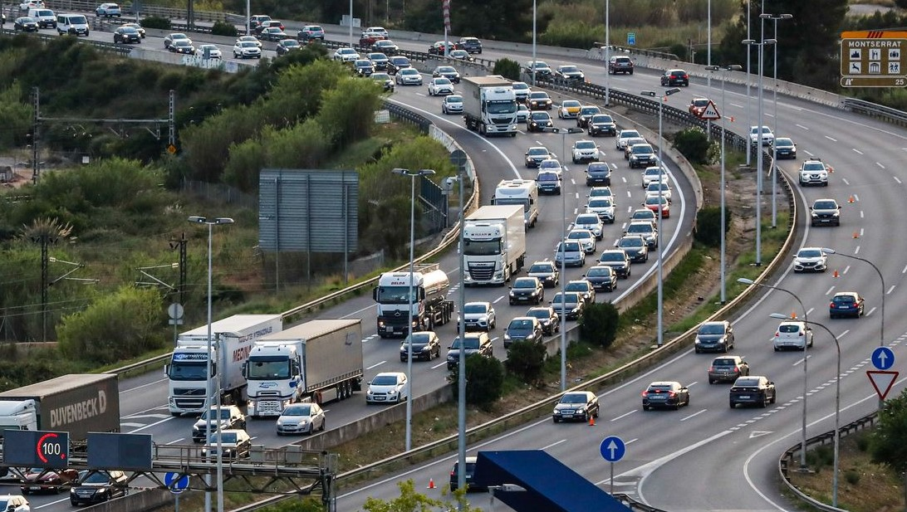

Martorell
Martorell es un municipio del Baix Llobregat, situado en la orilla derecha del Llobregat en el lugar de confuencia con Anoia, río que atraviesa por medio de su territorio. Tiene una extensión de 12,8 kilómetros cuadrados y una población de 28.667 habitantes (2021).
Las comunicaciones
La situación geográfica del término municipal, en el cruce que forman la Depresión Prelitoral y el valle del Llobregat, hace de Martorell un nudo de comunicaciones de gran importancia. En el desfiladero del Llobregat a su paso por Martorell confluyen la carretera N-II de Barcelona a Madrid –con dos trazados, uno antiguo por el centro de la Vila y el nuevo que se corresponde con la Autovía A-2-, el autopista AP-7, los Ferrocarriles Catalanes de la Generalitat -líneas de Barcelona en Manresa y en Igualada-, y el ferrocarril (RENFE) de las líneas Barcelona-Tarragona y Martorell-Hospitalet de Llobregat. Como infraestructura más reciente, pasa el tren de alta velocidad. Entre las vías menores, cabe destacar la comarcal C-243 de Vilafranca en Terrassa y la carretera local B-224 de Martorell hacia Piera y Capellades. Todas estas vías de comunicación tienen un trayecto paralelo desde Barcelona hasta traspasar el Congost, desde este punto se abren como un abanico, siguiendo los valles del Llobregat y del Anoia. Esta concentración de vías y la confluencia de ambos ríos hace que el término de Martorell haya sido muy modificado por obras e infraestructuras.

La población
La población (martorellenses) era de 118 fuegos en 1553; a partir de la segunda mitad del siglo XVI llegó a la villa una fuerte inmigración procedente del sur de Francia y se constituyó la Cofradía de los Extranjeros (1577). Hasta 1708 no se conocen nuevos datos de población. En ese año, Martorell tenía 200 casas y 808 h, y en 1752, según un censo ordenado por el señor de la baronía, disponía de 250 casas y 1.000 h. El censo de Floridablanca (1787) hace constar 270 casas y 1.987 habitantes. En 1848, según Madoz, Martorell contaba con 500 casas y 3.106 h. El nacimiento de la colonia fabril de Can Bros le dio un gran impulso y 10 años más tarde ya había 4.136 h. La población se estabilizó en censos posteriores: (4.334 en 1877; 4.012 en 1887). La crisis de la filoxera tuvo consecuencias en el censo de 1900 (3.221 h), para volver a crecer poco a poco a partir de entonces: (3 595 h en 1905; 3.805 h en 1910; 4.295 h en 1920; 4.972 en 1930). A finales de la guerra civil, la población alcanzó las 5.089 h. Un año después empezó la recuperación (5.437 h), que continuó con una tendencia al crecimiento en el período de posguerra: 6.019 h en 1945; 5.887 h en 1950 y 6.451 h en 1955. El incremento poblacional empezó a hacerse notable en los años sesenta, con la llegada de población de otros puntos de la península y con el incremento de la natalidad: 7.926 habitantes ( 1960), 10.295 h (1965) y 13.086 h (1970). A partir de la segunda mitad de los años setenta y durante los ochenta, la población se estabilizó con 15.948 h en 1981 y 16.653 en 1991. En la década de los 90 del pasado siglo, llegó un gran impulso demográfico a Martorell, que aumentó en más de 7.000 habitantes y que en 2001 registró 23.023, el 2005 se llegó a 25.766 hy en 2012 se alcanzó la cifra de 28.060 habitantes.